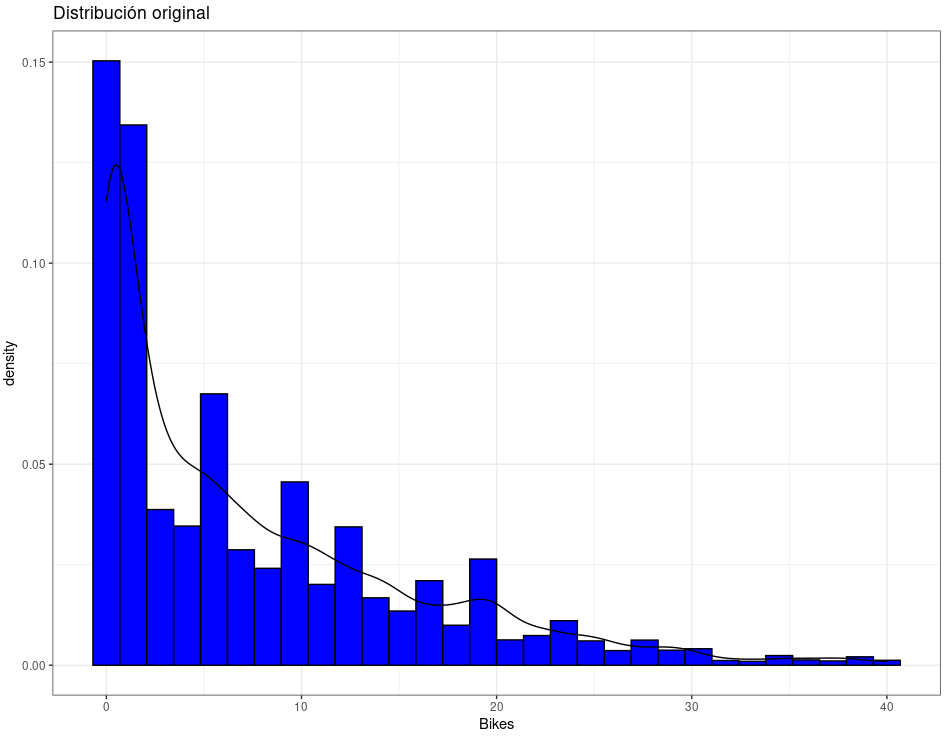
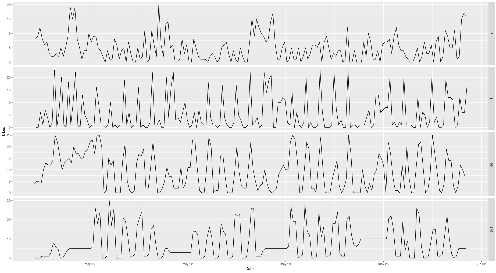
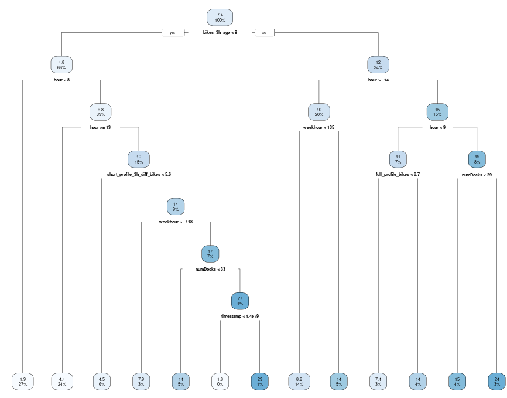

VLC Bike Demand Forecast
A bike rental company has just expanded the number of bike stations in Valencia. The new stations have only been in operation for a month but the company wants to know how the traffic will evolve in these stations in the coming months. Thus, the task to be performed is the 3 hours lead time prediction of the number of bicycles available at test stations. This is a typical machine learning regression problem in data science that I make use of the R language. It analyses pre-defined parameters such as trips made by the bikers in terms of hours, number of days, and months per year and weather data.
 
In this task, the following machine learning tools and models were implemented: Ctree, Rpart, Random forest, Bagging, Poisson, Gradient Boosting Machine, Deep Learning using H2O, XGBoost, Auto-sklearn
The analysed models present optimal results in general, demonstrating that a variety of ML models can predict the number of bicycles available for the new stations. The model's performance, measured by mean absolute error (MAE), varies between 3.1 and 7.5, being XGBoost the best model. One of the alternatives that could be taken to address these dataset and improve performance is to carry out models for each of the stations and not predict them all at once.

This project forms a part of a curse given in Polytechnic University of Valencia.